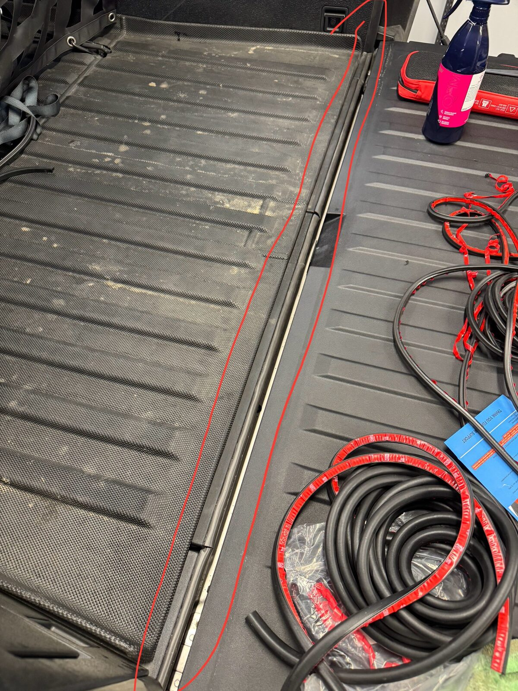
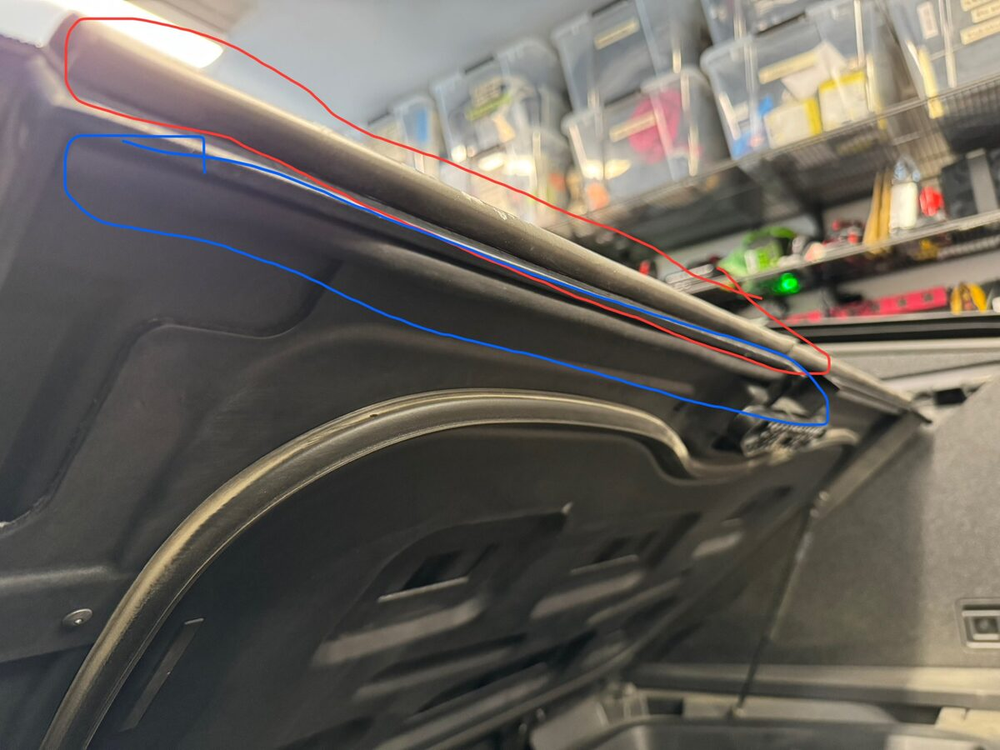
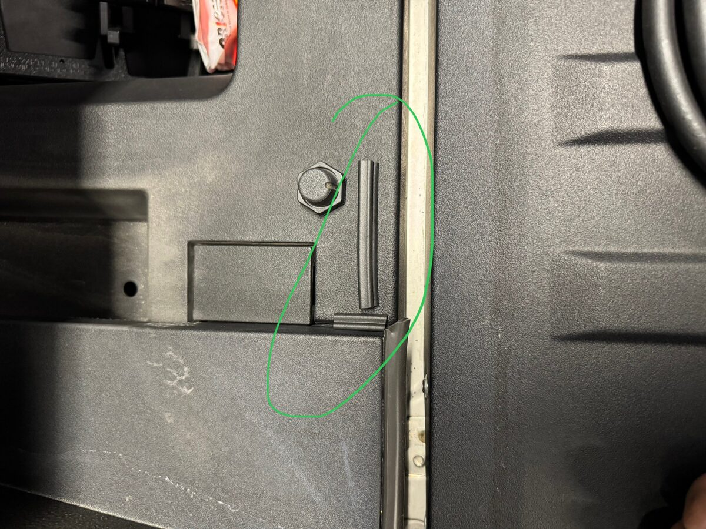
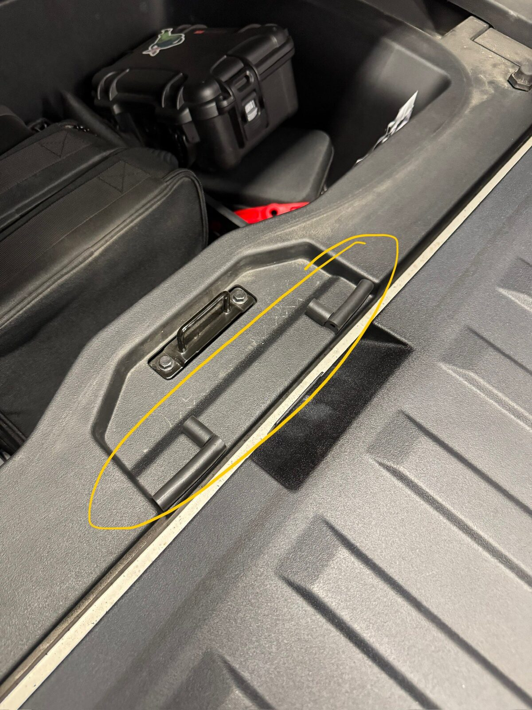
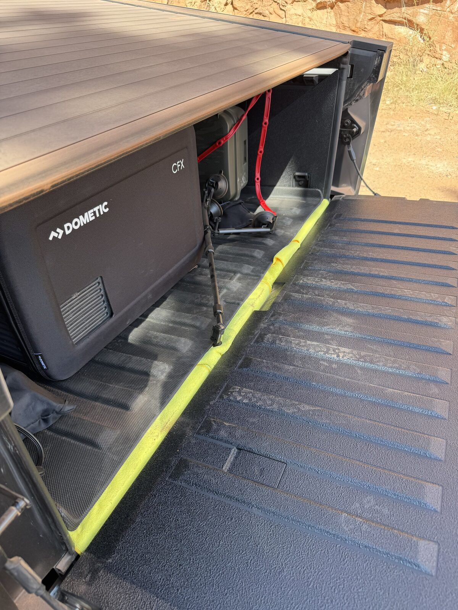
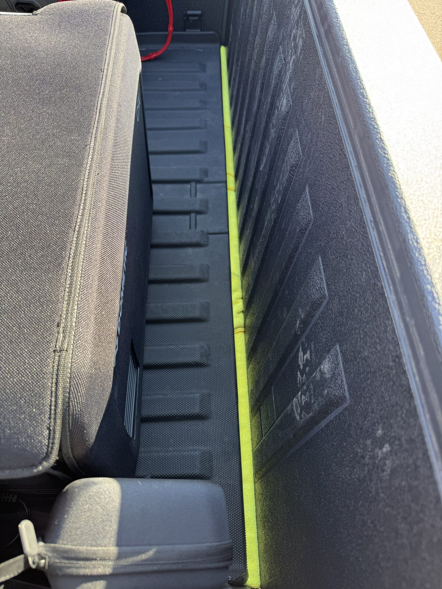

Sealing the Cybertruck Vault
The Cybertruck vault has multiple entry points for dust, dirt, and water. After enough off-road trips, you'll find fine dust coating everything in the bed — even with the tonneau closed. Here's a 4-level approach to sealing it up, from the biggest gaps to full dust-proofing.
1. Tailgate Gap Seal
The largest dust entry point is the gap between the tailgate and the bed floor. A foam seal strip closes this gap completely.

ⓘ Prep the surface first
Before applying the seal, wipe the surface clean and treat it with an adhesion promoter where the tape will adhere. This greatly improves how well the adhesive grips, especially on textured or low-energy surfaces, so the seal holds up over time.
⚠ Let the adhesive set
After applying the seal strip, leave the tailgate open for at least an hour so the adhesive can fully set. Closing the tailgate too soon can compress or shift the strip before it bonds, leaving gaps for dust to get through.
2. Smuggler's Bay Door Seal
Dust enters not only from the gap around the smuggler's bay door, but also from underneath the door where it travels up through the gaps into the vault. A foam seal tape around the door perimeter blocks both entry points.



3. Bed Mat + Microfiber Towels
A bed mat is recommended to seal the gaps on the bed floor. For complete sealing, fold microfiber towels and tuck them under the edges of the bed mat. This blocks the remaining gaps along the bed floor seams where fine dust can still work its way in.


4. Tonneau Cover Slats
Make sure your tonneau cover has all slats installed and does not have the exposed drain slat. The drain slat leaves an open channel that lets dust and water directly into the vault. Tesla has a service bulletin covering this — if you have the exposed drain slat, schedule service to get it replaced.
Tesla Service Manual — Tonneau Slats
Service Bulletin — SB-25-11-001
ⓘ Tip
These sealing methods stack — each level reduces dust intrusion further. Start with the tailgate seal (biggest impact) and work your way through as needed.